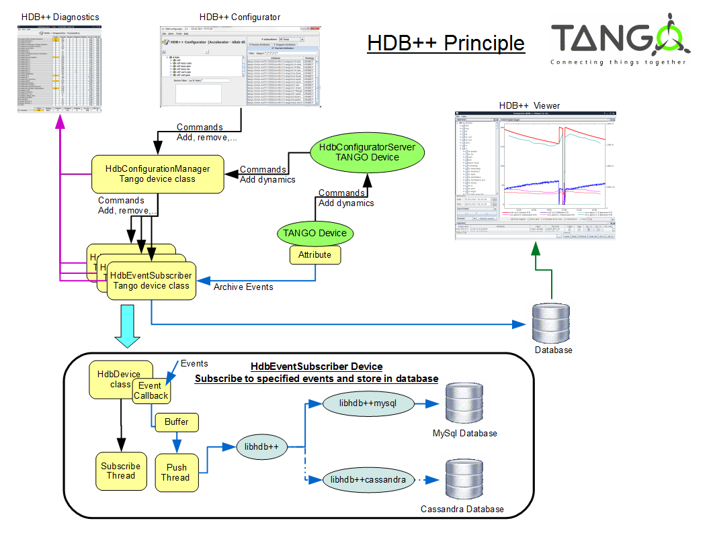

HDB++ Introduction¶
- The TANGO archiving system is a tool allowing TANGO users to store the readings coming from a TANGO based control system into a database.
- The archived data are essential for the day by day operation of complex scientific facilities for instance.
- They can be used for long term monitoring of subsystems, statistics, parameters correlation or comparison of operating setups over time.
- To take advantage of the fast and lightweight event-driven communication provided by TANGO release 9 with the adoption of ZeroMQ, a novel archiving system for the TANGO Controls framework, named HDB++, has been designed and developed, resulting from a collaboration between Elettra and ESRF at the beginning.
- HDB++ design allows TANGO users to store data with microsecond timestamp resolution into traditional database management systems such as MySQL or into NoSQL databases such as Apache Cassandra.
HDB++ Global principle¶

A TANGO device (HdbConfigurationManager class) manage one or several HdbEventSubscriber device(s).
- Each HdbEventSubscriber TANGO device is in charge to subscribe to archive events for a set of attributes.
When an event is received the attribute content is stored to the history database (depending on the used library).
- Several HdbConfigurationManager device could be defined.
- For instance:
- One for the accelerator
- One for each beamline.
Tools Introduction¶
Goal¶
- Configurator:
- The first goal of this tool is to add attributes to archiver.
- The second goal is to start and stop attributes archiving.
- The second goal is to manage contexts and strategies (see Strategies and Contexts)
- Diagnotics:
- The first goal is to know at a quick glance, if everything is OK in HDB++ system, and otherwise to be able to diagnose a problem and solve it.
- The second goal is to have statistics to know the HDB++ load and attribute distribution on archivers.
Start up¶
Tools are Java Tango GUI.
- That means that the $CLASSPATH needs:
- JTango.jar
- ATKWidget.jar
- ATKCore.jar
- Jive.jar
- hdb_configurator.jar
- To run them, the manager device name must be exported as an environment variable:
e.g: export HdbManager=sys/hdb-manager/accelerator
- Then start the java class:
java org.tango.hdb_configurator.configurator.HdbConfigurator
- or
java org.tango.hdb_configurator.diagnostics.HdbDiagnostics